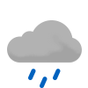

Weather
Germersheim
8.6-11.5

7.2-11.0 Fri
0.8-7.4 Sat

-0.8-3.6 Sun
3.5-6.4 Mon

3.8-9.5 Tue
9.4-11.0 Wed

8.6-11.1 Thu

7.3-10.6 Fri
3.1-6.3 Sat
Erlabrunn -1.2-4.6
-1.2-4.6
-1.2-4.6 Fri

-6.2-2.1 Sat

-7.5--3.3 Sun

-6.8--0.9 Mon

-1.9-2.5 Tue

4.6-5.6 Wed

3.3-5.0 Thu

0.1-2.6 Fri

-5.2--1.3 Sat
Schmilka -0.9-2.9
-0.9-2.9

-0.9-6.1 Fri

-6.9-5.2 Sat

-11.3--1.8 Sun

-10.0--1.2 Mon

-3.4-3.0 Tue

3.7-8.7 Wed

4.8-7.8 Thu

0.3-4.6 Fri

-2.4--0.9 Sat